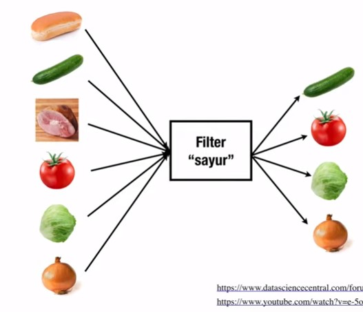
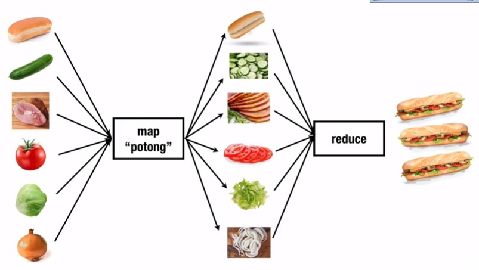

Object(revisited)
🚀File: Object/index.html & Object/script.js
🎥Video: Part 1 |
Part 2 | Part 3
Membuat Object pada Javascript
- Object Literal
- Function Declaration
- Constructor Function (keyword new)
- Object.create()
Object Literal
kekurangan dari Object Literal jika ingin membuat instansiasi object berikutnya harus membuat copynya. contohnya kita harus buat mahasiswa2
Jika object hanya 1, dan tidak terlalu besar objectnya gunakan Object literal
let mahasiswa = {;
nama: 'Arrizky',
energi: 100,
// method
makan: function(porsi) {
this.energi = this.energi + porsi;
console.log(`Nama: ${this.nama}, Energi:${this.energi}`);
return
}
}
mahasiswa.makan(5); // Nama: Arrizky, Energi: 105Function Declaration
Dengan menggunakan function declaration keuntunganya jika kita ingin menambahkan mahasiswa baru tidak perlu membuat duplikat dari objectnya. cukup buat function saja kemudian tinggal panggil function / instansiasi berulang kali.
function Mahasiswa(nama, energi) {
// object kosong
let mahasiswa = {};
// isi object kosong
mahasiswa.nama = nama;
mahasiswa.energi = energi;
// jika ingin membuat method
mahasiswa.makan = function(porsi) {
this.energi += porsi;
return `Nama: ${this.nama}, Energi: ${this.energi}`
}
return mahasiswa
}
const ariz = Mahasiswa('Arrizky', 80);
ariz.makan(20); // "Nama: Arrizky, Energi 100"Constructor Function (keyword new)
Constructor Function mirip dengan Function Declaration, Perbedaanya jika menggunakan constructor function tidak perlu menuliskan deklarasi variabel dan return itu sudah secara otomasti dilakukan oleh javascript.
- deklarasi variable dihapus.
- mahasiswa di ganti dengan this.
- menambahkan new saat akan di inisialisasi.
function Mahasiswa(nama, energi) {
this.nama = nama;
this.energi = energi;
// jika ingin membuat method
this.makan = function(porsi) {
this.energi += porsi;
return `Nama: ${this.nama}, Energi: ${this.energi}`
}
return mahasiswa
}
const ariz = new Mahasiswa('Arrizky', 80);
ariz.makan(20); // "Nama: Arrizky, Energi 100"Object.create()
memindahkan method Mahasiswa ke Sebuah object baru bernama methodMahasiswa, dan menempelkanya ke Object.create().
keuntunganya jika kita ingin menambahkan method Baru di function mahasiswa, tinggal ditambahkan di Object methodMahasiswa, selain itu dengan method ini kita dapat menghemat memori.
kekuranganya kita jadi mengelola dua object, padahal fokusnya adalah Mahasiswa
const methodMahasiswa = {
makan: function(porsi) {
this.energi += porsi;
return `Nama: ${this.nama}, Energi ${this.energi}`
},
maen: function (jam) {
const kurang = this.energi -= jam;
return `Energi anda berkurang ${jam} menjadi ${kurang}`
},
}
function Mahasiswa(nama, energi) {
// object.create
let mahasiswa = Object.create(methodMahasiswa);
// isi object kosong
mahasiswa.nama = nama;
mahasiswa.energi = energi;
return mahasiswa
}
const ariz = Mahasiswa('Arrizky', 80);
ariz.makan(20); // "Nama: Arrizky, Energi 100"Prototype
Javascript sudah otomatis membuat property bernama prototype pada function Mahasiswa, selanjutnya kita hanya cukup memanggil saja.
Prototype juga dapat digunakan untuk mengecek ada method apa saja di dalamnya, cara chekcnya di console ketik misal Object.prototype / Array.prototype.
function Mahasiswa(nama, energi) {
this.nama = nama;
this.energi = energi;
}
// buat prototypenya
Mahasiswa.prototype.makan = function(porsi) {
this.energi += porsi;
return `Sudah makan energi bertambah ${porsi}`
}
const ariz = new Mahasiswa('Arrizky', 100);
ariz.makan(10); // "Sudah makan energi bertambah 10"Class
class Mahasiswa {
constructor(nama, energi) {
this.nama = nama;
this.energi = energi;
}
makan (porsi) {
this.energi += porsi;
return `Sudah makan energi naik ${porsi}`;
}
}
const ariz = new Mahasiswa('Arrizky', 100);Closures
🚀File: Closures/index.html, Closures/script.js & Closures/closure.js
🎥Video: Part 1 | Part 2
Execution Context, Hoisting, Scope
2 Fase pada Execution Context / pada saat program dijalankan
- Creation
- Execution
Pada fase ini javascript akan mengecek apakah ada variable atau function di dalam kodinganya, JS tidak akan memperdulikan console.log terlebih dahulu.
jika ada nama var => undefined
jika ada function => fn() akan diisi function itu sendiri
konsep diatas disebut konsep hoisting.
Untuk mengecek bagaimana javascript berjalan secara bertahap buka: http://pythontutor.com/javascript.html
Hoisting
Javascript memungkinkan kita untuk memanggil sebuah variabel sebelum mendefinisikan, tetapi perilakunya agak "aneh", namun hal itu terjadi jika kita menggunakan var saja untuk membuat sebuah variabel
Hoisting merupakan perilaku default JavaScript untuk memindahkan deklarasi ke atas.
pada Javascript sebuah variable dapat di deklarasikan setelah digunakan, dengan kata lain sebuah variable dapat digunakan sebelum di deklarasikan
ariz = "Arrizky"; // isi valuenya
console.log(ariz); // tampilkan
var ariz; // deklarasi ariz
// output "Arrizky"Closure
- Closure merupakan kombinasi antara function dan lingkungan leksikal (lexical scope) di dalam function tersebut. -mdn
- Closure adalah sebuah function ketika memiliki akses ke parent scope-nya, meskipun parent scope-nya sudah selesai dieksekusi. -w3school
- Closure adalah sebuah function dikembalikan oleh function yang lain, yang memiliki akses ke lingkungan saat ia diciptakan. -code fellow
- Closure adalah sebuah function yang sebelumnya sudah memiliki data, hasil dari function yang lain. - Techsith
Lexical Scope
Dimana suatu function scope dapat mengakses variable di parent scopenya.
function init() {
const nama = 'Arrizky'; // local variable
function tampilNama() { // inner function (closure*)
console.log(nama); // akses ke parent variable
}
tampilNama();
}
init();Alasan menggunakan Closure
- Untuk membuat Function Factories -MDN
- Untuk membuat seolah-olah kita membuat sebuah private method.
Function Factories
membuat function sesuai dengan function lain
selengkapnya: https://www.javascripttutorial.net/javascript-factory-functions/
function ucapkanSalam(waktu) {
return function(nama) {
console.log(`Halo ${nama}, selamat ${waktu}`);
}
}
const selamatPagi = ucapkanSalam('Pagi');
const selamatSiang = ucapkanSalam('Siang');
const selamatMalam = ucapkanSalam('Malam');
selamatPagi('arrizky');Private Method
variable yang ada di dalam sebuah function, dan tidak bisa terpengaruh jika ada variabel yang sama di luar function tersebut.
let add = (function () { //bungkus dengan immediately invoke function
let counter = 0; // private properties and method
return function () {
return ++counter;
}
})();
counter = 100; // tidak akan berpengaruh ke counter di add()
console.log(add()); // 1
console.log(add()); // 2Var, Let & Const
🎥Video: Part 1
var, let & const merupakan sebuah keyword untuk membuat sebuah variabel
- var => function scope
- let & const => block scope
IIFE (Immediately Invoked Function Expression)
otomatis menjalankan function.
menyimpan function ke dalam kurung.
menjaga agar variabel dalam function tidak dapat diakses dari luar.
Namun cukup dengan menggunakan let/const otomatis variabel tidak dapat diakses dari luar. (block scope)
(function() {
console.log("hello");
}()); // helloLet atau Const ??
Jika kita yakin nantinya variabel kita tidak akan berubah valuenya gunakan const/ Konstanta => bernilai tetap
Sebaliknya jika nantinya variabel akan berubah gunakan let
kita menggunakan const untuk meminimalisir perubahan state
Arrow Function (=>)
🚀File: Arrow/index.html & Arrow/script.js
🎥Video: Part 1 |
Part
2
Bentuk lain yang lebih ringkas dari Function Expression / Function dengan variabel
Beberapa macam penulisan function:
- Function Declaration
- Function Expression
- Arrow Function
Karaterisik Arrow Function
Parameter hanya 1
- Jika hanya satu parameter tidak perlu menggunakan () & {}.
- Jika isi dari function hanya return saja, return tidak perlu dicantumkan (implicit return).
const tampilPesan = nama => `Hallo ${nama}`;
console.log(tampilPesan("arrizky"));
Parameter 2 atau lebih
jika ada 2 atau lebih parameter, harus menggunakan ().
const tampilNama = (nama, waktu) => {
return `Halo ${nama} selamat ${waktu}`;
}Tanpa parameter
wajib menggunakan ().
const tampilHW = () => `Hello World`;
console.log(tampilHW());Function merubah Array ke Object
jika ingin merubah Array ke object gunakan () ke properties.
const mahasiswa = ['Arrizky', 'Hasya', 'Pratama'];
const jumlahHuruf = mahasiswa.map(nama => ({nama: nama, jmlHuruf: nama.length}));
console.table(jumlahHuruf);Konsep this pada arrow function
- Jika menggunakan arrow function, this tidak akan berfungi semestinya, this akan mengecek ke atas / lexical scope.
- maka dari itu this pada arrow function hanya akan bekerja semestinya jika sebuah function didalamnya memiliki sebuah function yang bukan method.
const Mahasiswa = function() {
this.nama = 'Arrizky';
this.umur = '24';
// this akan mengecek lexical scope/ ke atas / ke parentnya
this.sayHello = () => {
return `Halo saya ${this.nama}, dan saya ${this.umur} tahun`;
}
}
const arrizky = new Mahasiswa();
arrizky.sayHello(); // "Halo saya Arrizky, dan saya 24 tahun".Higher Order Function
🚀File: HigherOrderFunction/index.html & HigherOrderFunction/script.js
🏋🏽♂️Latihan: HigherOrderFunction/latihan/index.html
& HigherOrderFunction/latihan/script.js
🎥Video: Part
1 |
Part
2 |
Part
3 (LATIHAN)
Pengertian Hihger Order Function
Function yang beroperasi pada function yang lain. Baik itu digunakan dalam argument, maupun sebagai return value. -eloquentjavascript.net
di dalam javascript sebuah function disebut dengan First Class Function, artinya inti dari javascript adalah function.
Javascript memperlakukan function sebagai object -sitepoint.com
Object juga merupakan sebuah value, sama seperti integer atau string. Maka function juga bisa kita simpan sebagai argument, maupun return value dari sebuah function yang lain.
ketika menggunakan function kita bisa menyimpan function lagi sebagai argument.
Function yang disimpan sebagai argument disebut Callback
Funtion yang memiliki callback sebagai argumentnya disebut Higher Order Function
- function kerjakanTugas = Higher Order Function
- selesai = callback
function kerjakanTugas(matakuliah, selesai) {
console.log(`Mulai mengerjakan tugas ${matakuliah} ...`);
selesai();
}
function selesai() {
alert(`Selesai mengerjakan tugas!!`);
}
kerjakanTugas('Algoritma', selesai);Contoh lainya adalah setTimeout dan setInterval dimana keduanya memiliki 2 parameter.
- parameter pertama function
- parameter kedua adalah integer, untuk menyimpan berapa waktu tunggu
maka bisa dilihat parameter pertama merupakan function (callback), sehingga setTimeout dan setInterval bisa disebut dengan Higher Order Function.
Contoh lainnya juga ketika kita punya sebuah function yang return value nya merupakan sebuah function juga.
Kenapa menggunakan Higher Order Function??
ada beberapa alasan:
- Absktraksi => agar kode yang kita buat bisa lebih sederhana. Karena dengan menggunakan
function itu
artinya kita menyembunyikan kerumitan.
Semakin besar sebuah program, semakin tinggin kompleksitasnya, semakin membingungkan programmernya. - Dengan terbiasa kita menggunakan function, kita masuk ke sebuah pendekatan yang namanya Functional Programming, dan ketika kita menggunakan paradigma ini dengan benar itu akan membuat program kita lebih efektif, aman, dan efisien lagi.
Contoh Higher Order Function
paling sering digunakan terutama untuk pengelolaan array:
- Array.prototype.filter()
- Array.prototype.map()
- Array.prototype.reduce()
3 function diatas merupakan Prototype dari tipe data array.
 perbedaan map dan foreach adalah foreach tidak menghasilkan array baru sedangkan map menghasilkan array baru.
tidak merubah array origin.
filter()
const angka = [-1, 8, 9, 1, 4, -5, -4, 3, 2, 9];
// mencari angka yang >= 3
const angkaBaru = angka.filter(event => event >= 3); //arrow function
console.log(angkaBaru); // [8, 9, 4, 3, 9]map()
// kali semua angka dengan 2
const angkaBaru = angka.map(event => event * 2);
console.log(angkaBaru); // [-2, 16, 18, 2, 8, -10, -8, 6, 4, 18]
reduce()
untuk melakukan sesuatu pada seluruh element pada array.
reduce mempunyai 2 argument (accumulator, currentValue).
- accumulator adalah hasil dari prosesnya.
- currentValue adalah element array yang sedang di looping.
secara default ada nilai awal 0 (accumulator + currentValue , 0) yang bisa di ubah.
// menjumlah semua array
const angkaBaru = angka.reduce((accumulator, currentValue) => accumulator + currentValue);
console.log(angkaBaru); // 26Method Chaining
kita bisa menggabungkan fungsi-fungsi pada higher order dalam satu kali eksekusi, tidak perlu disimpan di variabel terlebih dahulu satu-satu.
// cari angka > 5
// kali 3
// jumlahkan
const hasil = angka.filter(event => event >= 5) // [8, 9, 9]
.map(event => event * 3) // [24, 27, 27]
.reduce((acc, curr) => acc + curr); // 78
console.log(hasil);Template Literals
🚀File: Template
Literals/index.html & Template
Literals/string.js
🏋🏽♂️Latihan: Template Literals/Latihan/script.js
🎥Video: Part 1
| Part 2
(LATIHAN)
| Part
3
Template Literals/Template String
Template literal adalah string literal yang memungkinkan adanya expression di dalamnya -MDN Web Docs
String Literal adalah string yang biasa kita buat, baik itu yang disimpan di variabel, atau kita cetak menggunakan console.log
// kutip satu
let nama = 'Arrizky';
// kutip dua
let nim = "10515112";
// back tick
let email = `arizarzi@email.com`;Dengan menggunakan Back tick (``) memungkinkan kita untuk membuat Template Literal.
Dengan menggunakan Back tick ini kita bisa melakukan banyak hal yaitu:
- Multi-line String
- Embedded Expression
- HTML Fragments
- Expression Interpolation
- Tagged Template
Multi-line String
Jika kita ingin membuat string dalam console.log, lalu ingin menampilkan di baris terpisah cukup tambahkan enter.
tidak memerlukan /n lagi.
console.log(
`string 1
string 2`
);
// string 1
// string 2
Embedded Expression
const nama = 'Arrizky';
let umur = 24;
console.log(`Halo saya ${nama}, saya ${umur} tahun.`);Multi-line String (HTML Fragments)
const data = {
nama: 'arrizky',
nim: '10515112',
};
const ele = `<div class="data-diri">
<h2>${data.nama}<h2>
<span class="nim">${data.nim}</span>
</div>`;
console.log(ele);Looping
const mhs =[
{
nama: 'Arrizky Hasya Pratama'
email: 'arizariz@email.com'
},
{
nama: 'Louisa Kiara'
email: 'louwkey@email.com'
},
{
nama: 'Lili Smile Kitty'
email: 'similikiti@email.com'
}
];
const el = `<div class="mhs">
${mhs.map(m => `<ul>
<li>${m.nama}</li>
<li>${m.email}</li>
</ul>`).join('')}
</div>`
document.body.innerHTML = el;Conditionals
const lagu = {
judul: 'Intuisi',
penyanyi: 'Yura Yunita',
// feat: 'John Lennon'
}
const el = `<div class="lagu">
<ul>
<li>${lagu.penyanyi}</li>
<li>${lagu.judul} ${lagu.feat ? `(feat, ${lagu.feat})` : `` }</li>
</ul>
</div>`
document.body.innerHTML = el;Nested
HTML Fragments bersarang.
const mhs = {
nama: 'Arrizky Hasya Pratama',
semester: 5
mataKuliah: ['Rekayasa Web',
'Algoritma & Struktur Dasar',
'Pemrograman Web',
'Pancasila',
],
};
function cetakMataKuliah(mataKuliah) {
return `
<ol>
${mataKuliah.map(mk => `<li>${mk}</li>`).join('')}
</ol>`;
}
const el = `<div class="mhs">
<h2>${mhs.nama}</h2>
<span class="semester"> Semester: ${mhs.semester}</span>
<h4>Mata Kuliah:</h4>
${cetakMataKuliah(mhs.mataKuliah)}
</div>`;
document.body.innerHTML = el;Expression Interpolation
let a = 10;
let b = 90;
console.log(`Jika a = ${a} dan b = ${b} maka hasil penjumlahanya adalah ${a+b}.`);Tagged Templates
Bentuk yang lebih kompleks dari Template Literals, memungkinkan kita untuk membaca template literals melalui sebuah function. - MDN Web Docs
more check : https://wesbos.com/tagged-template-literals
const nama = 'Arrizky Hasya';
const umur = 24;
function coba(strings, ...values) {
let result = '';
strings.forEach((strs, i) => {
result += `${strs}${values[i] || ''} `;
});
return result;
// reduce
// return strings.reduce((result, strs, i) => `${result}${strs}${values[i] || ''}`,'');
}
const str = coba`Halo nama saya ${nama}, saya ${umur} tahun.`;
console.log(str); // Halo nama saya Arrizky Hasya , saya 24 tahun.Penggunaan lain ??
- Escaping HTML Tags
- Translation & Internationalization
- Styled Components
Sanitasi HTML tags => untuk menghindari ketika ada script/karakter yang tidak diinginkan.
Alih bahasa web
Untuk front-end Framework Vue/React
Destructuring
🚀File: Destructuring/index.html & Destructuring/script.js
🎥Video: Part
1 | Part 2
| Tambahan
| Tambahan 2
Expression pada javascript yang membuat kita dapat membongkar nilai dari array atau properti dari object kedalam variabel yang terpisah. -MDN Web Docs.
Destructuring Array
petakan tiap-tiap element array ke variabel terpisah yang namanya bebas.
const coba = ['satu', 'dua', 'tiga'];
// skipping items
// const [a, ,c] = coba;
// conventional
// const satu = coba[0];
// const dua = coba[1];
// destructuring
const [a,b,c] = coba;
console.log(a); // satu
console.log(b); // dua
console.log(c); // tigaSwap Items
menukar isi variabel
let a = 1
let b = 2
console.log(a, b); // 1 2
[a, b] = [b, a];
console.log(a, b); // 2 1Return array pada function
function bisa mengembalikan array, dan array bisa di tangkap oleh syntax destructuring.
function coba() {
return[1,2];
}
const [a, b] = coba();
console.log(a); // 1
console.log(b); // 2Rest parameter (...values)
const [a, ...values] = [ 1 , 2 , 3 , 4, 5, 6];
console.log(a); // 1
console.log(values); // [2, 3, 4, 5, 6]Nested Array
Variabel array di dalam array.
const lang = [
['javascript', 'php'],
'java',
'ruby',
'python',
];
const [[js, ph], dua, tiga] = lang;
console.log(js, ph, tiga); // javascript php rubyMultidimensional Array
Array yang didalamnya ada object / sebaliknya.
const mhs = [
{nama: 'Arrizky' umur: 21},
{nama: 'Hasya' umur: 25},
];
const [{nama}, {nama: nama2}] = mhs;
console.log(nama); // Arrizky
console.log(nama2); // HasyaMultidimensional Nested Array Object
const mhs = {
nama: 'arrizky'
umur: 24
links: [
{
nama: 'Facebook'
url: 'fb.com/arrizz'
},
{
nama: 'Instagram'
url: 'ig.com/arrizz'
},
],
}
const { links: [ {}, {nama, url} ] } = mhs;
console.log(nama, url); // Instagram ig.com/arrizzDestructuring Object
const mhs = {
nama 'Arrizky Hasya Pratama',
nim '10515112',
umur 24,
};
// conventional
// const nama = mhs.nama;
// Destructuring
// nama tidak boleh sembarang, harus sama dengan property
const {nama,nim,umur} = mhs;
console.log(nama); // Arrizky Hasya Pratama
console.log(nim); // 10515112
console.log(umur); // 24Tanpa Deklarasi Object
tambah kurung ().
({nama,nim,umur} = {
nama: 'Arrizky Hasya Pratama'
nim: '10515112'
umur: 24,
});
console.log(nama); // Arrizky Hasya Pratama
console.log(nim); // 10515112
console.log(umur); // 24Assign nama property tambahan
jika tidak ingin sama dengan nama property tambahkan ":"
const mhs = {
nama: 'Arrizky Hasya Pratama',
nim: '10515112',
umur: 24
};
const {nama: a, nim: b, umur: c} = mhs;
console.log(a); // Arrizky Hasya Pratama
console.log(b); // 10515112
console.log(c); // 24Memberikan default value
bisa menambahkan value jika tidak ada di property.
const mhs = {
nama: 'Arrizky Hasya Pratama'
nim: '10515112'
};
const {nama,nim,umur = 24} = mhs;
console.log(nama); // Arrizky Hasya Pratama
console.log(nim); // 10515112
console.log(umur); // 24Property tambahan + default value
menggabungkan property baru + default value
const {nama: nm,nim: ni,umur: um = 24} = mhs;
console.log(um); // 24 Destructuring Function
function penjumlahanPerkalian (a,b) {
return [a + b, a * b]
}
const [jumlah, kali] = penjumlahanPerkalian(2,3);
console.log(jumlah); // 5
console.log(kali); // 6Function return berupa Object
function kalkulasi(a,b) {
return {
tambah: a + b,
kurang: a - b,
kali: a * b,
bagi: a / b,
}
}
// urutan tidak berpengaruh karena terasosiainya dengan nama properti
const {tambah, kali, kurang, bagi} = kalkulasi(2, 3);
console.log(kurang); // -1Function Nested Object
const mhs1 = {
nama: 'Arrizky',
umur: 24,
email: 'ariz@gmail.com',
nilai: {
tugas: 80,
uts: 85,
uas: 70,
}
}
// destructoring argument menjadi object {}
function cetakMhs({nama , umur, nilai: {tugas, uts, uas}}) {
return `Halo saya ${nama}, saya ${umur} tahun, dan nilai uas saya ${uas}`;
}
console.log(cetakMhs(mhs1)); // Halo saya Arrizky, saya 24 tahun, dan nilai uas saya 70Function Mengambil 1 properties Object
const mhs = {
id: 123,
nama: 'Arrizky Hasya Pratama'
nim: '10515112'
umur: 24,
};
// ambil id saja tidak yang lain
function getIdMhs({ id }) {
return id;
}
console.log(getIdMhs(mhs)); // 123For..of vs for..in
🚀File: ForOf_ForIn/index.html
& ForOf_ForIn/script.js
🎥Video: Part 1
For...of & For...in merupakan 2 looping baru dalam syntax javascript.
for..of
Sebuah looping yang bisa mengulang atau menelusuri object-object yang iterable
Iterable Object
- String
- Array
- Arguments / NodeList
- TypedArray
- Map
- Set
- User-defined Iterables
Array
const mahasiswa = ['Arrizky','Hasya', 'Pratama'];
// for biasa
for( let i = 0 i < mahasiswa.length++) {
console.log(mahasiswa[i]);
}
// for each
mahasiswa.forEach( (mhs) => {console.log(mhs); })
// const nama variable of nama array
// m dari array mahasiswa
for(const m of mahasiswa) {
console.log(m);
}String
// forEach tidak bisa digunakan untuk string
const nama = 'Ariz';
for( const n of nama ) {
console.log(n);
}
// a r i zIndex dalam forEach
const mahasiswa = ['Arrizky','Hasya', 'Pratama'];
// index dalam foreach
mahasiswa.forEach((m, i) => {
console.log(`${m} adalah mahasiswa ke ${i+1}`);
});
// for off secara default tidak mempunyai index
// tapi tetap bisa dengan cara yang berbeda, dengan menggunakna destructuring
for (const [i, m] of mahasiswa.entries() ) {
console.log(`${m} adalah mahasiswa ke ${i+1}`);
}NodeList
Nodelist ketika kita menggunakan query dalam DOM.
const liNama = document.querySelectorAll('.nama');
// forEach
liNama.forEach(n => console.log(n.innerHTML));
// for...of
for (n of liNama) {
console.log(n.innerHTML);
}Arguments
Arguments ada pada function.
function jumlahkanAngka () {
let jumlah = 0;
for( a of arguments) {
jumlah += a
}
return jumlah;
}
console.log(jumlahkanAngka(1,2,3,4,5));for...in
membuat looping yang hanya enumerable.
Enumerable adalah properti pada object.
const mahasiswa = {
nama: 'arrizky'
umur: 24,
email: 'ariz@gmail.com'
}
for (mhs in mahasiswa) {
// mengambil value property
console.log(mahasiswa[mhs]);
// mengambil index property
console.log(mhs);
}Spread & Rest Operator
🚀File: Spread_&_Rest/index.html
& Spread_&_Rest/script.js
🎥Video: Part 1 |
Part 2
Kedua Operator ini direprentasikan dengan tiga titik (...), meskipun notasinya sama tetapi keduanya berbeda.
Spread Operator
Operator yang memecah (expand/unpack) iterables(banyak isinya) menjadi single element.
Spread Operator digunakan ketika kita akan menggabungkan 2 Array atau lebih.
Selain itu Spread Operator juga bisa digunakan untuk men-copy Array.
const mahasiswa = ['Arrizky', 'Hasya', 'Pratama'];
console.log(...mahasiswa); // Arrizky Hasya PratamaMenggabungkan 2 atau lebih array
const mahasiswa = ['Arrizky', 'Hasya', 'Pratama '];
const dosen = ['Adilla', 'Billy', 'Athalla'];
const orang = [...mahasiswa,'Kalea', ...dosen];
console.log(orang); // gabungan array mahasiswa + dosenCopy Array
const mahasiswa1 = [...mahasiswa];
console.log(mahasiswa1); // ["Arrizky", "Hasya","Pratama"]Rest Operator
Mereprentasikan argument pada function dengan jumlah yang tidak terbatas menjadi sebuah array.
Rest parameter hanya bisa digunakan di akhir argument.
function myFunc(...myArgs) {
return myArgs // jadi array
// return arguments; // bisa tetapi bukan array
// return Array.from(arguments); // jadi array
// return [...arguments] // jadi array [1, 2, 3, 4, 5]
}
console.log(myFunc(1,2,3,4,5));Array Destructuring
const kelompok1 = ['Arrizky', 'Asep', 'Huda', 'Fidya', 'Wildan'];
// nama pertama ketua, nama kedua waketu.
const [ketua, wakil, ...anggota] = kelompok1;
console.log(ketua); // Arrizky
console.log(wakil); // Asep
console.log(anggota); // ['Huda', 'Fidya', 'Wildan,']Object Destructuring
const team = {
pm: 'Arrizky',
frontEnd1: 'Hasya',
frontEnd2: 'Pratama',
backEnd: 'Asep',
ux: 'Huda',
}
const {pm, ...myTeam} = team;
console.log(myTeam);Filtering
function filterBy(type, ...values) {
return values.filter(v => typeof v === type)
}
// pertama type sisanya nilai
console.log(filterBy('boolean', 1,2,'Arrizky',false,10,true,'Pratama'));Asynchronous Programing
Secara default, proses di JavaScript akan dieksekusi secara Synchronous, artinya baris selanjutnya akan dieksekusi setelah baris sebelumnya dikerjakan.
Walaupun secara default proses di JavaScript dieksekusi secara Synchronous, namun kita bisa membuatnya menjadi Asynchronous.
Teknik-teknik Asynchronous Javascript:
- Callback
- Promise
- ajax
- Async & Await
"Javascript is a single-threader, non-blocking, asynchronous and concurrent language."
Single-threaded
Thread Urutan eksekusi kode yang dapat dilakukan secara bebas / independent satu sama lain. Intinya javascript hanya bisa melakukan satu hal pada satu waktu tertentu.
Javascript membaca baris perbaris dan menyelesaikannya.
non-blocking
Blocking ketika sebuah script pada saat dieksekusi, ternyata membutuhkan waktu yang lama, maka tidak bisa lanjut ke script berikutnya, Harus menunggu sampai script pertama selesai
Non-Blocking ketika mengerjakan satu hal walaupun pekerjaanya belum selesai, bisa lanjut ke pekerjaan berikutnya.
Asynchronous
Synchronous merupakan mode default dalam proses eksekusi perintah kode. Setiap perintah di eksekusi satu persatu sesuai urutan kode yang di tuliskan. Contoh => antrian Bank. Jika dapat no 4 maka akan dilayanai setelah 1-3 selesai
Proses Syncchronous juga bisa disebut Blocking. karena harus menunggu tiap proses selesai, baru proses selanjutnya bisa dilakukan.
Asynchronous Kode tidak akan langsung dieksekusi, tetapi di skip dan akan melakukan eksekusi baris perintah berikutnya. Hasil eksekusi atau output tidak selalu berdasarkan urutan kode, tetapi berdasarkan waktu proses.
Eksekusi dengan asynchronous tidak akan membloking atau menunggu suatu perintah sampai selesai. Daripada menunggu, asynchronous akan mengeksekusi perintah selanjutnya.
Asynchronous + Single-threded = Concurrency
Asynchronous + Multi-threded = Parallelism

Ada banyak method Async yang terdapat di JavaScript, namun ini 2 contohnya:
- setTimeout(handler,time), digunakan untuk menjalankan proses Async sekali dalama waktu tertentu.
- setInterval(handler, time), digunakan untuk menjalankan proses Async secara periodik dalam waktu tertentu.
Kesimpulan
Hubunganya dengan Linkungan eksekusi 'task', dikerjakan menggunakan 1 thread atau banyak thread.
Teknin 'ngoding' biasanya hubunganya dengan input dan ouput.
Tknik 'ngoding' yang hubunganya dengan HTTP Reques related. biasanya kalu kita ingin menggunakan ajax.
Hubunganya dengan lingkungan eksekusi 'task'.
Intinya
Kenapa belajar Asynchronous? supaya bisa menciptakan sebuah program yang nyaman digunakan oleh user, jadi kita tau kapan kita menggunakan fungsi asynchronous pada javascript.
DON'T BLOCK THE LOOP!
Jangan sampai kita blok si event loopnya.
AJAX
Ajax singkatan dari Asynchronous JavaScript and XML
- Ajax dapat digunakan untuk mengambil data dari server setelah halaman web tampil
- AJAX dapat digunakan utnuk mengubah tampilan web tanpa harus me-load ulang web.
- Dengan menggunakan AJAX kita akan memisahkan antara beban kerja backend & frontend, frontend cukup menampilkan website dulu nanti secara lazy akan memanggil backend data menggunakan AJAX, Jadi setelah web tampil maka akan call backend, dengan begitu web terlihat sangat cepat, karena tidak harus menunggu respond backend.
- AJAX biasanya digunakan untuk mengirim data ke server atau menerima data dari server.
- Kita tidak bisa langsung mengambil response AJAX, karena proses AJAX adlaah Async, sehingga kita perlu menunggu sampai proses Async nya selesai.
- Ajax dapat mengirim data ke server secara async di backgroud.
- untuk mendapatkan informasi AJAX, kita bisa menggunakan AJAX callback, yang akan dieksekusi setelah proses AJAX selesai.
Callback
🚀File: Callback/index.html |
Callback/script.js |
Callback/data/mahasiswa.json
🏋🏽♂️Latihan: Callback/Latihan/index.html
& Callback/Latihan/script.js
🎥Video: Part 1
|
Part 2
(Latihan)
Apa itu Callback ??
- Function yang dikirimkan sebagai parameter pada function yang lain.
- Function yang dieksekusi setelah fungsi lain selesai dijalankan.
- Callback merupakan mekanisme untuk memanggil kembali kode yang ada di program dari proses Async.
- Callback biasanya dibuat dalam bentuk function, dan function tersebut akan dieksekusi saat proses Async selesai.
- Dengan menggunakan Callback, program bisa menerima informasi yang dibutuhkan dari proses yang berjalan secara Async.
Coding dibawah menggunakan Callback/data/mahasiswa.json
function getDataMahasiswa(url, success, error) {
// ajax
let xhr = new XMLHttpRequest();
xhr.onreadystatechange = function() {
if ( xhr.readyState === 4) {
if (xhr.status === 200) {
success(xhr.response);
} else if (xhr.status === 404) {
error();
}
}
}
xhr.open('get', url);
xhr.send();
}
console.log('mulai');
getDataMahasiswa('data/mahasiswa.json', result => {
// menampilkan hanya nama
const mhs = JSON.parse(result);
mhs.forEach(m => console.log(m.nama));
}, () => {
});
console.log('selesai');
// output Asynchronous karena selesai terlebih dahulu keluar.
// mulai
// selesai
// Arrizky Hasya Pratama
// Wildan Darissalam
// Asep Suhendar- Semakin banyak callback, kita bisa punya sesuatu yang di sebut callback hell.
- Untuk menghindari callback hell solusinya adalah menggunakan promise.
- Melakukan Callback tidak salah tetapi ada cara yang lebih efektif yaitu menggunakan Fetch.
ketika kita menggunakan jquery perlu diingat bahwa kita memanggil library eksternal, ketika kita memanggil library eksternal ada resource yang digunakan, jadi defaultnya performance nya akan lebih lambat, dibanding kita menggunakan bawaan dari javascript.
Promise
🚀File: Promise/index.html
& Promise/script.js
🎥Video: Promise
Apa itu Promise??
Promise adalah sebuah solusi untuk menangani Callback Hell.
Promise adalah sebuah Object yang merepresentasikan keberhasilan/kegagalan dari sebuah event yang Asynchronous, yang akan terjadi di masa yang akan datang.
- janji (terpenuhi / ingkar)
- stater(fulfilled / rejected / pending)
- callback (resolve / reject / finally)
- aksi (then / catch) terpenuhi => then | tidak terpenuhi => catch
untuk menjalankan keadaan diatas ada 3 fungsi callback
ada juga aksi yang akan dilakukan ketika janjinya terpenuhi atau tidak.

Contoh 1 | tanpa delay
let ditepati = true
const janji1 = new Promise((resolve, reject) => {
// resolve ketika apa | reject ketika apa
if (ditepati) {
resolve('Janji telah ditepati');
} else {
reject('Ingkar janji')
}
});
janji1
.then(response => console.log('OK! :' + response ))
.catch(response => console.log('NOT OK! : ' + response));
// OK! :Janji telah ditepatiContoh 2 | dengan delay
let ditepati = true;
const janji2 = new Promise((resolve, reject) => {
if (ditepati) {
// kasih waktu
setTimeout(() => {
resolve('Ditepati setelah beberapa waktu!');
}, 2000);
} else {
setTimeout(() => {
reject('Tidak Ditepati setelah beberapa waktu!');
}, 2000);
}
});
console.log('mulai');
// pending lalu beberapa detik fulfilled
// console.log(janji2.then(() => console.log(janji2)));
// menunggu dua detik | pending tidak terlihat
janji2
// finally dijalankan ketika then/catch sudah siap dijalankan
// ketika promise tidak pending, finally akan dijalankan terlebih dahulu
.finally(() => console.log('Selesai menunggu!'))
.then(response => console.log('OK ! : ' + response))
.catch(response => console.log('NOT OK! : ' + response));
console.log('selesai');Promise.all()
Dijalankan ketika kita punya banyak promise, ingin dijalankan sekaligus.
Menjalankan beberapa promise sekaligus.
let ditepati = true;
const film = new Promise((resolve, reject) => {
if (ditepati) {
setTimeout(() => {
resolve([{
judul: 'Batman Begins',
sutradara: 'Arrizky HP',
actor: 'Tom Hanks'
}])
}, 5000);
} else {
setTimeout(() => {
reject('Api tidak di temukan');
}, 5000);
}
});
const cuaca = new Promise((resolve, reject) => {
if (ditepati) {
setTimeout(() => {
resolve([{
kota: 'Bandung',
suhu: '20',
kondisi: 'mendung'
}])
}, 5000);
} else {
setTimeout(() => {
reject('Api tidak di temukan');
}, 5000);
}
});
// tanpa promise.all
// film.then(response => console.log(response));
// cuaca.then(response => console.log(response));
// dengan promise.all
Promise.all([film, cuaca])
// .then(response => console.log(response));
.then(response => {
const [film, cuaca] = response;
console.log(film);
console.log(cuaca);
});